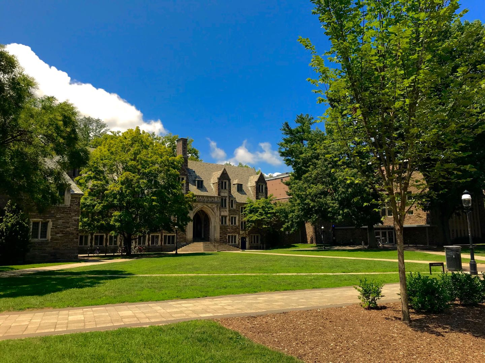
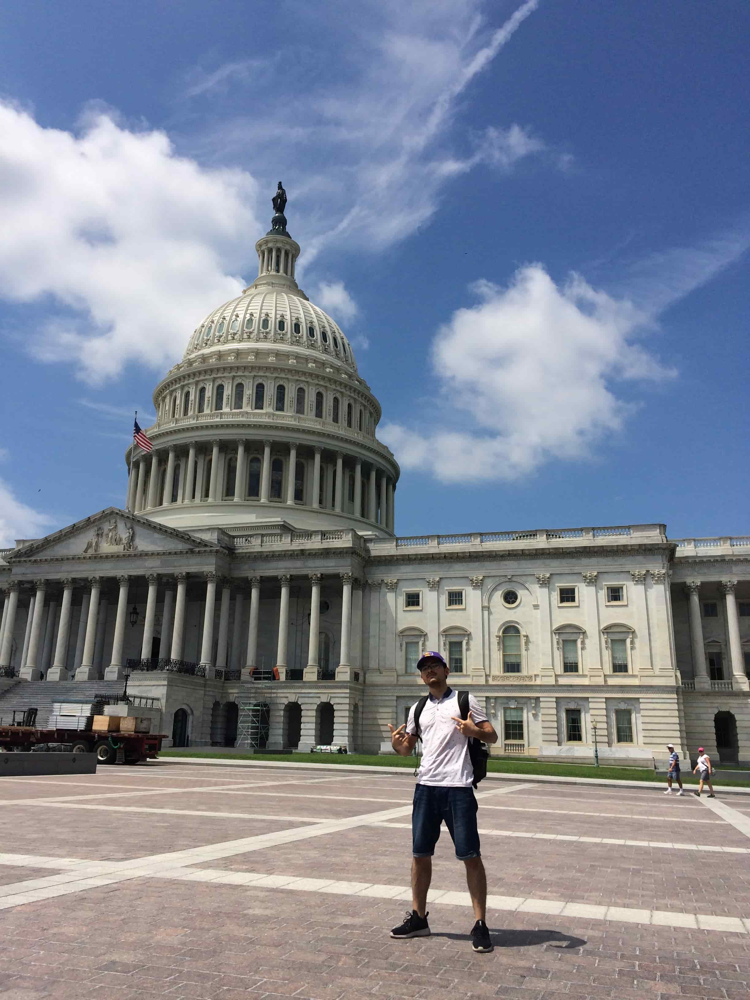
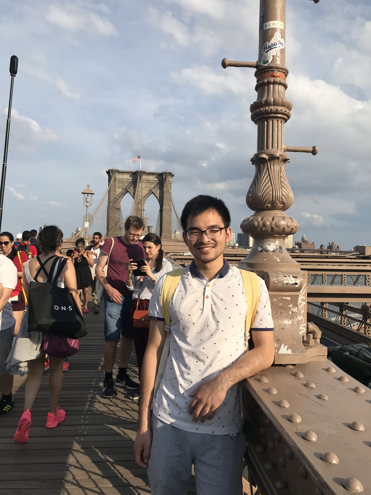

@Johns Hopkins University, 2018.7
I went to Johns Hopkins University in a summer program for several months. This picture is taken in the evening at the center square of the university.
@Princeton University, 2018.7
The Princeton University gives me a feeling of fairy palace and I always wanted to go back again.
@United States Capitol, Wangshington DC, 2018.8
@Brooklyn bridge, New York City, 2018.8